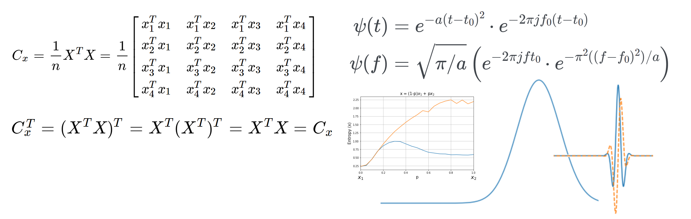

Courses and Material
Here are different courses and material that I have been developing for teaching purposes.
Courses, slides and demo
Statistics for medical students

- • Describe your data - descriptive statistics: mean, mode, median, SD, Var etc
- • Making sense with inferential statistics - SE, CI
- • Test the effect - hypothesis desgin and testing - differences, associations, (non)parameteric

Courses in progress ..
Signal Analysis Methods

- • Covariance, SVD, PCA, Least Square
- • Wavelet filter, Transfer Entropy
- • Connectivity, Spatio-temporal
Seminars & Presentations


Would you like to help?